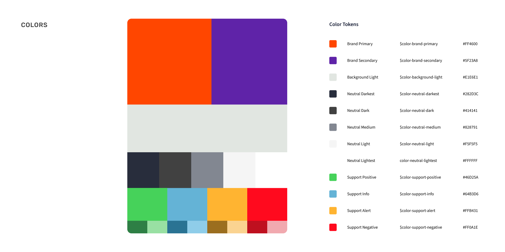
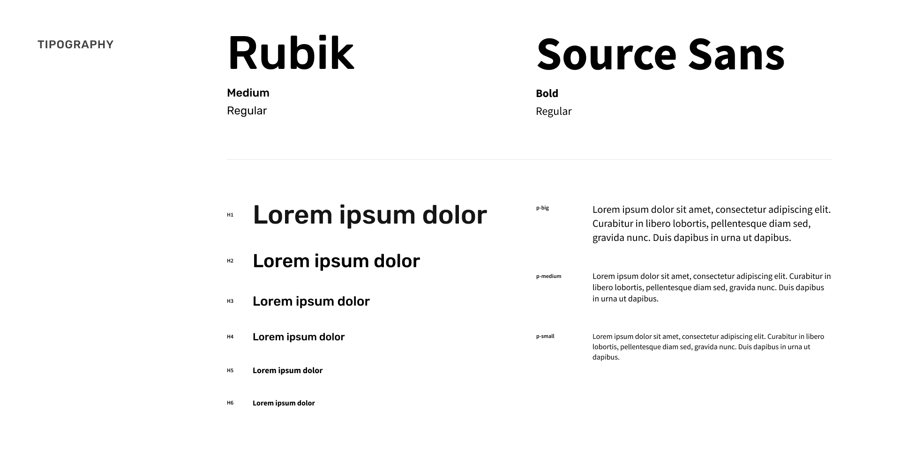
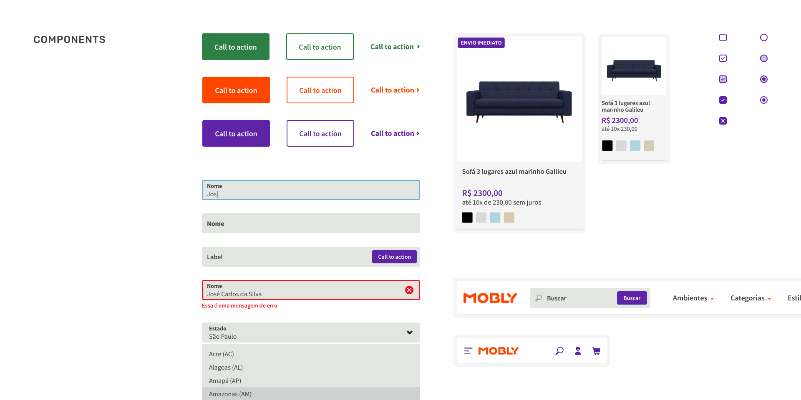
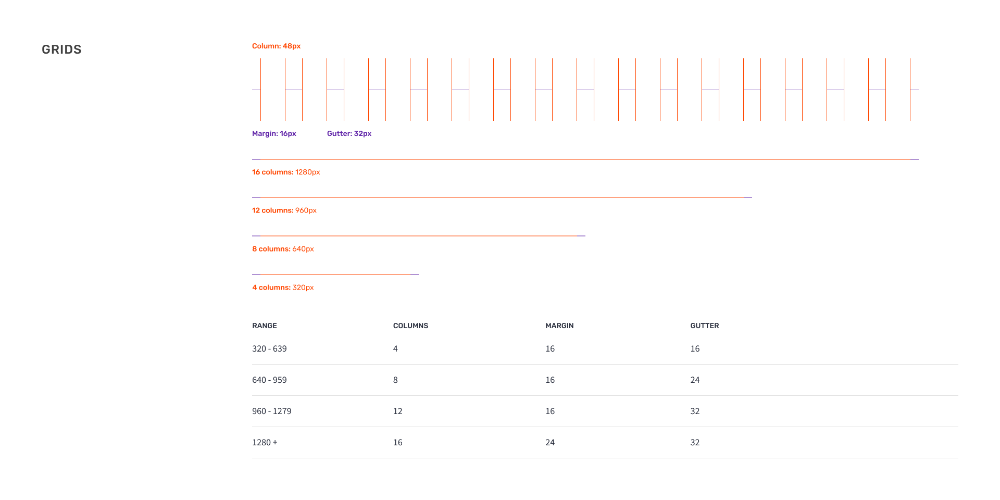
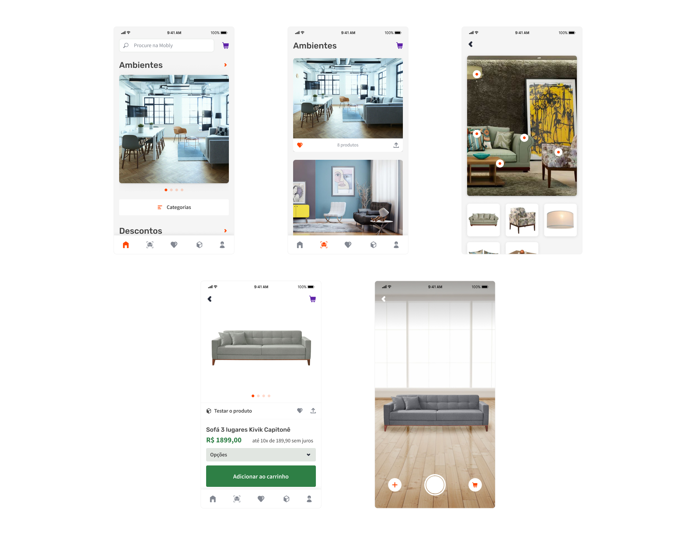
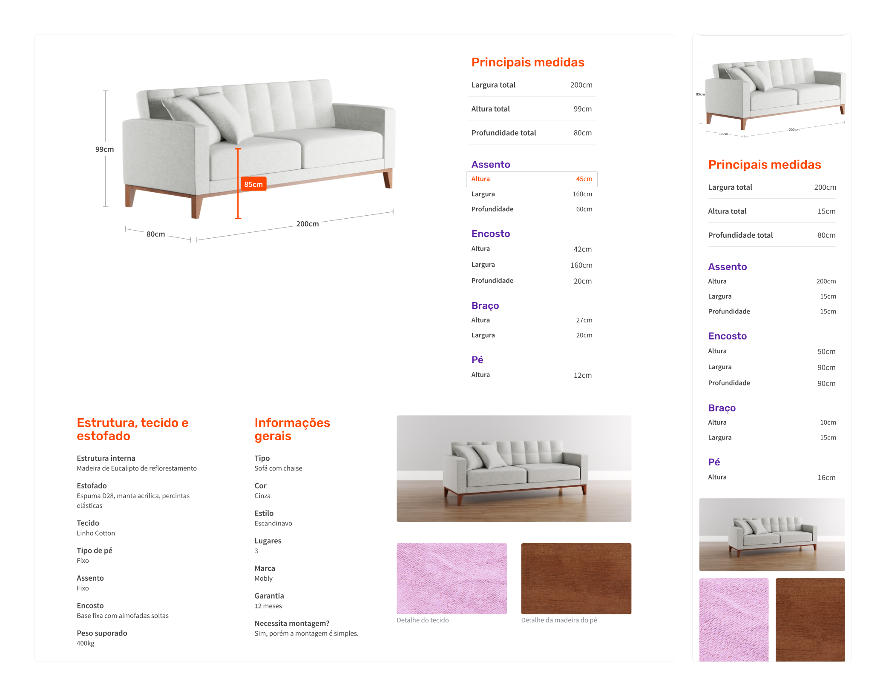
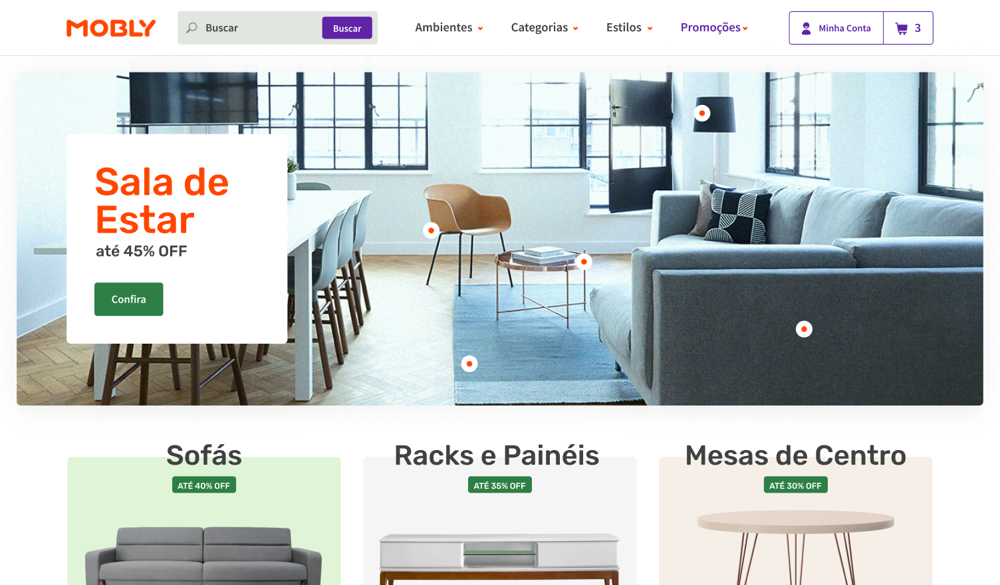
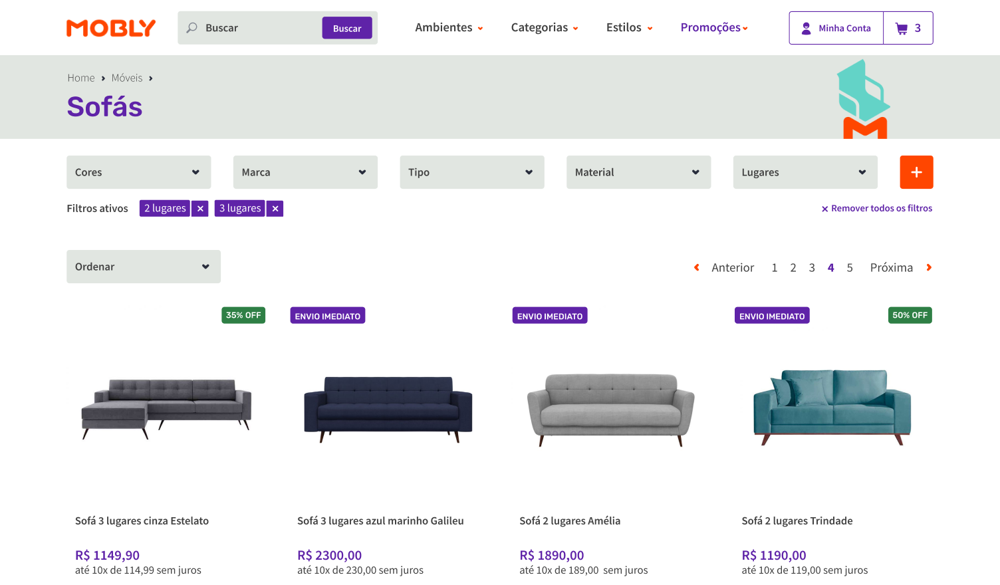
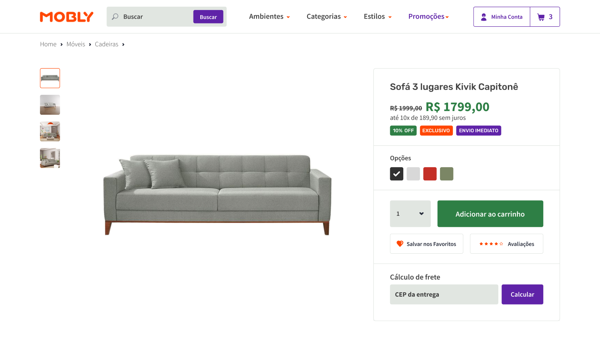
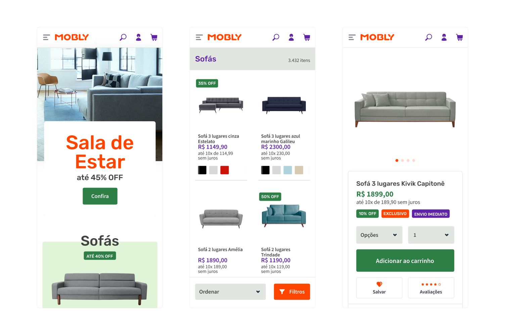

Context
Established in 2011 and born as a 100% online store, Mobly is one of the largest furniture and decor retailers in Brazil. The startup brought disruption to the Brazilian market, introducing new ways to decorate and buy furniture and facing logistics challenges.
My role
Alongside project managers, developers, marketing and branding teams my main assignments were to analyse and prioritise user feedbacks and business needs to deliver new features and enhance customers experience.
I participated from the beginning to end of all interface design projects, running ideation sessions, data analysis, planning and executing design deliverables.
Design process
Most of product iterations or new projects would start based on business needs or performance KPIs. In order to balance with customers needs, projects would follow common project methodologies, such as:
- Open questionnaires
- Data analysis
- Desk research
- Creative ideation sessions
- Wire-framing
- UI Design
- A/B testing
Design System
Mobly's brand was redesigned in 2016 and I was responsible for bringing the brand assets and language into a digital Style Guide that started to become a more robust Design System, as it became a communication and delivery tool between designers and developers.




iOS and Android apps with AR product placement
Buying furniture without touching or testing it surely was a friction hard to overcome. And customers insights and competitors benchmark have always supported this hypothesis.
In order to tackle this issues, Mobly lauched an app with two core features: product placement with Augmented Reality and decorated rooms with Mobly's products.
I was responsible for leading the third-party development team in Interface Design, AR usability, 3D models quality assurance and managing the decorated ambients image production.


Detailed product information
Another issue reported by users was the lack of product information. By enriching the products specifications with detailed measurements, close-up photographs, structural information and product usage guidance — that were usually missing or taken as too specific —, it was possible to meet the needs of the most demanding customers and differentiate Mobly's purchase experience.
UI Design
Most of my time was spent executing high fidelity deliverables. I have designed almost every page of the online store at least once and made a lot of concepts that have never been launched.




Final thoughts
Several years after I left the company and I still make use if the knowledge and repertoire I gained working at Mobly. That is only possible because I've worked with a talented team, shared great debates and decisions and faced great problems. I feel happy to see the path the company is taking nowadays, expanding the business and still making great impact on its market.